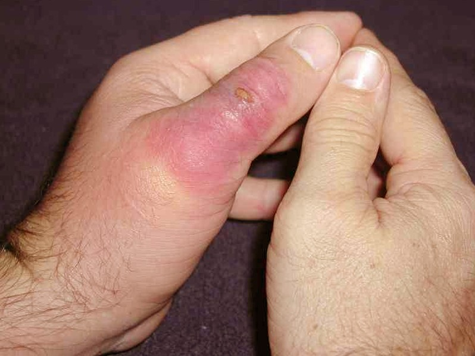
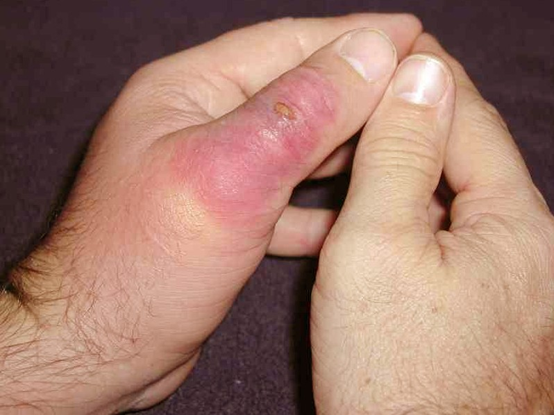

Black and Yellow Garden Spider
Black and yellow garder spider (argiope aurantia): Also known as writing spider or corn spider, these
spiders are considered harmless to humans. They normally build their webs in open, sunny areas where they can be
sheilded from the wind. They can also be found along the eaves of houses and in tall vegetation where they can secure
a web.

Spider Survival Guide
Banded Garden Spider
Banded Garden Spider (argiope trifasciata): These spiders normally begin to appear in the fall months (early September
to late October) when the temperatures begin to drop. This species prefers open fields and prairies. They build their
webs close to the ground and prey on small insects that become trapped in their webs.
Spider Survival Guide

 
